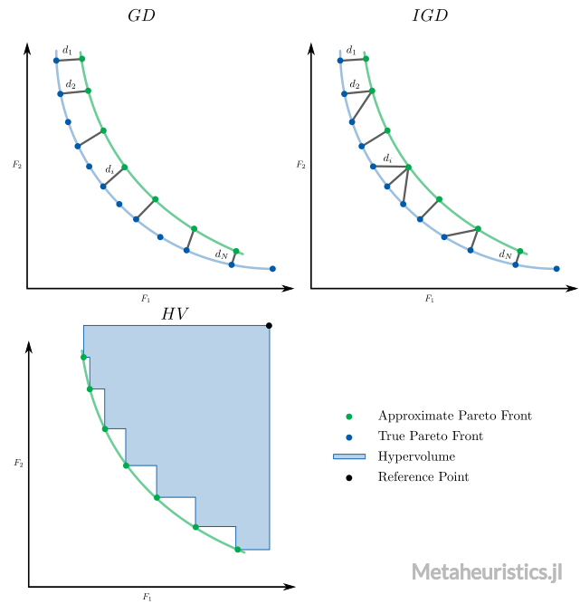

Performance Indicators
Metaheuristics.jl includes performance indicators to assess evolutionary optimization algorithms performance.
Available indicators:

Note that in Metaheuristics.jl, minimization is always assumed. Therefore these indicators have been developed for minimization problems.
Metaheuristics.PerformanceIndicators — ModulePerformanceIndicatorsThis module includes performance indicators to assess evolutionary multi-objective optimization algorithms.
gdGenerational Distance.igdInverted Generational Distance.gd_plusGenerational Distance plus.igd_plusInverted Generational Distance plus.coveringCovering indicator (C-metric).hypervolumeHypervolume indicator.
Example
julia> import Metaheuristics: PerformanceIndicators, TestProblems
julia> A = [ collect(1:3) collect(1:3) ]
3×2 Array{Int64,2}:
1 1
2 2
3 3
julia> B = A .- 1
3×2 Array{Int64,2}:
0 0
1 1
2 2
julia> PerformanceIndicators.gd(A, B)
0.47140452079103173
julia> f, bounds, front = TestProblems.get_problem(:ZDT1);
julia> front
F space
┌────────────────────────────────────────┐
1 │⠁⠀⠀⠀⠀⠀⠀⠀⠀⠀⠀⠀⠀⠀⠀⠀⠀⠀⠀⠀⠀⠀⠀⠀⠀⠀⠀⠀⠀⠀⠀⠀⠀⠀⠀⠀⠀⠀⠀⠀│
│⠄⠀⠀⠀⠀⠀⠀⠀⠀⠀⠀⠀⠀⠀⠀⠀⠀⠀⠀⠀⠀⠀⠀⠀⠀⠀⠀⠀⠀⠀⠀⠀⠀⠀⠀⠀⠀⠀⠀⠀│
│⠈⠄⠀⠀⠀⠀⠀⠀⠀⠀⠀⠀⠀⠀⠀⠀⠀⠀⠀⠀⠀⠀⠀⠀⠀⠀⠀⠀⠀⠀⠀⠀⠀⠀⠀⠀⠀⠀⠀⠀│
│⠀⠈⢆⠀⠀⠀⠀⠀⠀⠀⠀⠀⠀⠀⠀⠀⠀⠀⠀⠀⠀⠀⠀⠀⠀⠀⠀⠀⠀⠀⠀⠀⠀⠀⠀⠀⠀⠀⠀⠀│
│⠀⠀⠀⠢⡀⠀⠀⠀⠀⠀⠀⠀⠀⠀⠀⠀⠀⠀⠀⠀⠀⠀⠀⠀⠀⠀⠀⠀⠀⠀⠀⠀⠀⠀⠀⠀⠀⠀⠀⠀│
│⠀⠀⠀⠀⠈⠢⡀⠀⠀⠀⠀⠀⠀⠀⠀⠀⠀⠀⠀⠀⠀⠀⠀⠀⠀⠀⠀⠀⠀⠀⠀⠀⠀⠀⠀⠀⠀⠀⠀⠀│
│⠀⠀⠀⠀⠀⠀⠉⠢⡄⠀⠀⠀⠀⠀⠀⠀⠀⠀⠀⠀⠀⠀⠀⠀⠀⠀⠀⠀⠀⠀⠀⠀⠀⠀⠀⠀⠀⠀⠀⠀│
f_2 │⠀⠀⠀⠀⠀⠀⠀⠀⠈⠑⢤⡀⠀⠀⠀⠀⠀⠀⠀⠀⠀⠀⠀⠀⠀⠀⠀⠀⠀⠀⠀⠀⠀⠀⠀⠀⠀⠀⠀⠀│
│⠀⠀⠀⠀⠀⠀⠀⠀⠀⠀⠀⠈⠲⢄⡀⠀⠀⠀⠀⠀⠀⠀⠀⠀⠀⠀⠀⠀⠀⠀⠀⠀⠀⠀⠀⠀⠀⠀⠀⠀│
│⠀⠀⠀⠀⠀⠀⠀⠀⠀⠀⠀⠀⠀⠀⠈⠒⢤⡀⠀⠀⠀⠀⠀⠀⠀⠀⠀⠀⠀⠀⠀⠀⠀⠀⠀⠀⠀⠀⠀⠀│
│⠀⠀⠀⠀⠀⠀⠀⠀⠀⠀⠀⠀⠀⠀⠀⠀⠀⠈⠙⠢⢄⡀⠀⠀⠀⠀⠀⠀⠀⠀⠀⠀⠀⠀⠀⠀⠀⠀⠀⠀│
│⠀⠀⠀⠀⠀⠀⠀⠀⠀⠀⠀⠀⠀⠀⠀⠀⠀⠀⠀⠀⠀⠈⠑⠢⢄⡀⠀⠀⠀⠀⠀⠀⠀⠀⠀⠀⠀⠀⠀⠀│
│⠀⠀⠀⠀⠀⠀⠀⠀⠀⠀⠀⠀⠀⠀⠀⠀⠀⠀⠀⠀⠀⠀⠀⠀⠀⠈⠉⠢⠤⣀⠀⠀⠀⠀⠀⠀⠀⠀⠀⠀│
│⠀⠀⠀⠀⠀⠀⠀⠀⠀⠀⠀⠀⠀⠀⠀⠀⠀⠀⠀⠀⠀⠀⠀⠀⠀⠀⠀⠀⠀⠀⠉⠑⠢⢤⣀⠀⠀⠀⠀⠀│
0 │⠀⠀⠀⠀⠀⠀⠀⠀⠀⠀⠀⠀⠀⠀⠀⠀⠀⠀⠀⠀⠀⠀⠀⠀⠀⠀⠀⠀⠀⠀⠀⠀⠀⠀⠀⠉⠒⠢⢄⣀│
└────────────────────────────────────────┘
0 1
f_1
julia> PerformanceIndicators.igd_plus(front, front)
0.0Generational Distance

Metaheuristics.PerformanceIndicators.gd — Functiongd(front, true_pareto_front; p = 1)Returns the Generational Distance.
Parameters
front and true_pareto_front can be:
N×mmatrix whereNis the number of points andmis the number of objectives.StateArray{xFgh_indiv}(usuallyState.population)
Generational Distance Plus
Metaheuristics.PerformanceIndicators.gd_plus — Functiongd_plus(front, true_pareto_front; p = 1)Returns the Generational Distance Plus.
Parameters
front and true_pareto_front can be:
N×mmatrix whereNis the number of points andmis the number of objectives.StateArray{xFgh_indiv}(usuallyState.population)
Inverted Generational Distance

Metaheuristics.PerformanceIndicators.igd — Functionigd(front, true_pareto_front; p = 1)Returns the Inverted Generational Distance.
Parameters
front and true_pareto_front can be:
N×mmatrix whereNis the number of points andmis the number of objectives.StateArray{xFgh_indiv}(usuallyState.population)
Inverted Generational Distance Plus
Metaheuristics.PerformanceIndicators.igd_plus — Functionigd_plus(front, true_pareto_front; p = 1)Returns the Inverted Generational Distance Plus.
Parameters
front and true_pareto_front can be:
N×mmatrix whereNis the number of points andmis the number of objectives.StateArray{xFgh_indiv}(usuallyState.population)
Spacing Indicator
Metaheuristics.PerformanceIndicators.spacing — Functionspacing(A)Computes the Schott spacing indicator. spacing(A) == 0 means that vectors in A are uniformly distributed.
Covering Indicator ($C$-metric)
Metaheuristics.PerformanceIndicators.covering — Functioncovering(A, B)Computes the covering indicator (percentage of vectors in B that are dominated by vectors in A) from two sets with non-dominated solutions.
A and B with size (n, m) where n is number of samples and m is the vector dimension.
Note that covering(A, B) == 1 means that all solutions in B are dominated by those in A. Moreover, covering(A, B) != covering(B, A) in general.
If A::State and B::State, then computes covering(A.population, B.population) after ignoring dominated solutions in each set.
Hypervolume

Metaheuristics.PerformanceIndicators.hypervolume — Functionhypervolume(front, reference_point)Computes the hypervolume indicator, i.e., volume between points in front and reference_point.
Note that each point in front must (weakly) dominates to reference_point. Also, front is a non-dominated set.
If front::State and reference_point::Vector, then computes hypervolume(front.population, reference_point) after ignoring solutions in front that do not dominate reference_point.
Examples
Computing hypervolume indicator from vectors in a Matrix
julia> import Metaheuristics.PerformanceIndicators: hypervolumejulia> f1 = collect(0:10); # objective 1julia> f2 = 10 .- collect(0:10); # objective 2julia> front = [ f1 f2 ]11×2 Array{Int64,2}: 0 10 1 9 2 8 3 7 4 6 5 5 6 4 7 3 8 2 9 1 10 0julia> reference_point = [11, 11]2-element Array{Int64,1}: 11 11julia> hv = hypervolume(front, reference_point)66.0
Now, let's compute the hypervolume implementation in Julia from the result of NSGA3 when solving DTLZ2 test problem.
julia> using Metaheuristicsjulia> import Metaheuristics.PerformanceIndicators: hypervolumejulia> import Metaheuristics: TestProblems, get_non_dominated_solutionsjulia> f, bounds, true_front = TestProblems.DTLZ2();julia> result = optimize(f, bounds, NSGA3());julia> approx_front = get_non_dominated_solutions(result.population)100-element Array{Metaheuristics.xFgh_solution{Array{Float64,1}},1}: (f = [0.3789610559590477, 0.9009332438241747, 0.21967720501677335], g = [0.0], h = [0.0], x = [1.407e-01, 7.465e-01, …, 4.979e-01]) (f = [5.455896119078423e-18, 0.08910154540683943, 0.9969366302645413], g = [0.0], h = [0.0], x = [9.433e-01, 1.000e+00, …, 5.111e-01]) (f = [0.164826306427033, 0.9829294198909959, 0.1016185297113386], g = [0.0], h = [0.0], x = [6.469e-02, 8.942e-01, …, 5.187e-01]) (f = [0.5265928760449072, 0.10569764396079581, 0.8459050929548031], g = [0.0], h = [0.0], x = [6.399e-01, 1.261e-01, …, 4.913e-01]) (f = [5.003955427932123e-17, 0.8172079380628066, 0.580244409234606], g = [0.0], h = [0.0], x = [3.931e-01, 1.000e+00, …, 4.954e-01]) (f = [0.8399328537913234, 0.20534926961650862, 0.5076515200201958], g = [0.0], h = [0.0], x = [3.380e-01, 1.526e-01, …, 5.186e-01]) (f = [6.107302096132552e-17, 0.997398123342125, 0.08906067191865945], g = [0.0], h = [0.0], x = [5.670e-02, 1.000e+00, …, 4.812e-01]) (f = [1.10156289413514, 0.06177857085455742, 1.6532960865611476e-5], g = [0.0], h = [0.0], x = [9.540e-06, 3.567e-02, …, 5.285e-01]) (f = [6.126477706427846e-17, 1.261651093577447e-21, 1.0005297383690421], g = [0.0], h = [0.0], x = [1.000e+00, 1.311e-05, …, 5.149e-01]) (f = [0.6852171272260776, 0.7255536600692306, 0.10146129588471803], g = [0.0], h = [0.0], x = [6.450e-02, 5.182e-01, …, 5.209e-01]) ⋮ (f = [0.894647684584191, 0.3986980467235426, 0.2197732876664791], g = [0.0], h = [0.0], x = [1.405e-01, 2.669e-01, …, 4.882e-01]) (f = [0.8374792228350179, 0.195729567093194, 0.5161124428054694], g = [0.0], h = [0.0], x = [3.441e-01, 1.462e-01, …, 5.067e-01]) (f = [0.44737035815246107, 0.4877222372009442, 0.762817467612348], g = [0.0], h = [0.0], x = [5.451e-01, 5.275e-01, …, 5.151e-01]) (f = [0.8995615372566449, 0.44627821497653636, 0.0004946813487872061], g = [0.0], h = [0.0], x = [3.136e-04, 2.932e-01, …, 5.541e-01]) (f = [0.7980347214925706, 0.5928265296915206, 0.11921210181640034], g = [0.0], h = [0.0], x = [7.598e-02, 4.067e-01, …, 4.965e-01]) (f = [0.8500952876420282, 0.5109144913437672, 0.16690173051631982], g = [0.0], h = [0.0], x = [1.061e-01, 3.445e-01, …, 5.169e-01]) (f = [0.49877519171880264, 0.6024125276178363, 0.6309363647120113], g = [0.0], h = [0.0], x = [4.322e-01, 5.597e-01, …, 5.269e-01]) (f = [0.017225188051364, 0.5963133877591689, 0.8121397266733201], g = [0.0], h = [0.0], x = [5.967e-01, 9.816e-01, …, 4.966e-01]) (f = [0.982430019957648, 0.03716445889868, 0.1915089207481614], g = [0.0], h = [0.0], x = [1.225e-01, 2.407e-02, …, 4.782e-01])julia> reference_point = nadir(result.population)3-element Array{Float64,1}: 1.6553423998713084 1.006886504114544 1.0005297383690421julia> hv = hypervolume(approx_front, reference_point)1.0719497805689344
$\Delta_p$ (Delta $p$)
Metaheuristics.PerformanceIndicators.deltap — Functiondeltap(front, true_pareto_front; p = 1)
Δₚ(front, true_pareto_front; p = 1)Returns the averaged Hausdorff distance indicator aka Δₚ (Delta p).
"Δₚ" can be typed as \Delta<tab>\_p<tab>.
Parameters
front and true_pareto_front can be:
N×mmatrix whereNis the number of points andmis the number of objectives.Array{xFgh_indiv}(usuallyState.population)
$\varepsilon$-Indicator
Unary and binary $\varepsilon$-indicator (epsilon-indicator). Details in E. Zitzler, L. Thiele, M. Laumanns, C.M. Fonseca, V.G. da Fonseca (2003)
Metaheuristics.PerformanceIndicators.epsilon_indicator — Functionepsilon_indicator(A, B)Computes the ε-indicator for non-dominated sets A and B. It is assumed that all values in A and B are positive. If negative, the sets are translated to positive values.
Interpretation
epsilon_indicator(A, PF)is unary ifPFis the Pareto-optimal front.epsilon_indicator(A, B) == 1none is better than the other.epsilon_indicator(A, B) < 1means that A is better than B.epsilon_indicator(A, B) > 1means that B is better than A.- Values closer to 1 are preferable.
Examples
julia> A1 = [4 7;5 6;7 5; 8 4.0; 9 2];
julia> A2 = [4 7;5 6;7 5; 8 4.0];
julia> A3 = [6 8; 7 7;8 6; 9 5;10 4.0 ];
julia> PerformanceIndicators.epsilon_indicator(A1, A2)
1.0
julia> PerformanceIndicators.epsilon_indicator(A1, A3)
0.9
julia> f, bounds, pf = Metaheuristics.TestProblems.ZDT3();
julia> res = optimize(f, bounds, NSGA2());
julia> PerformanceIndicators.epsilon_indicator(res, pf)
1.00497701620997